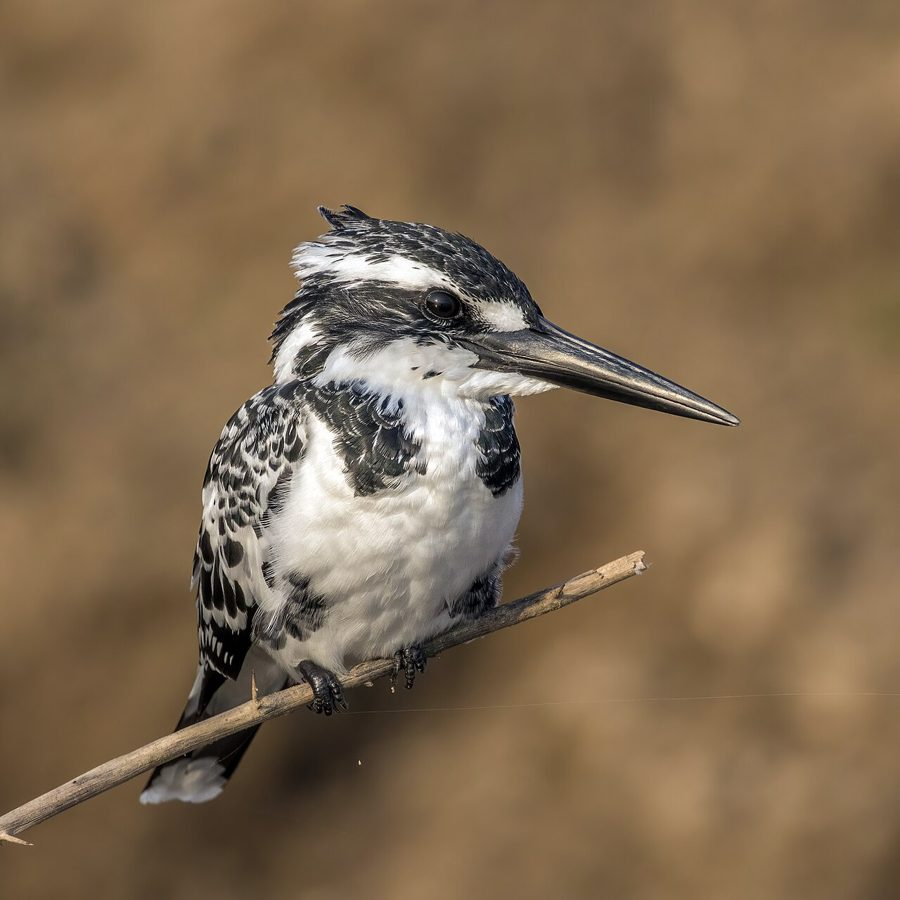

छोटा किलकिलाPied Kingfisher
Ceryle rudis · Alcedinidae · BRD-0022

- Scientific name
- Ceryle rudis (Linnaeus, 1758)
- Family
- Alcedinidae
- Hindi
- छोटा किलकिला
- Status here
- native
- IUCN
- LC
When to look कब देखें
Present all year.
छोटा किलकिला / Pied Kingfisher
Ceryle rudis (Linnaeus, 1758) — Alcedinidae
छोटा किलकिला (कबरा किलकिला) — हमारे बड़े जलाशयों, नहरों और नदियों के किनारे पाया जाने वाला एक मध्यम आकार का काले और सफेद चित्तीदार रंग का अत्यधिक फुर्तीला किंगफिशर (किलकिला) है। यह अपने अनोखे शिकार करने के तरीके के लिए प्रसिद्ध है, जिसमें यह पानी की सतह से 5-10 मीटर ऊपर हवा में एक ही स्थान पर पंख फड़फड़ाते हुए लंबवत स्थिर (hovering) हो जाता है और शिकार दिखते ही सीधे नीचे की ओर पानी में गोता (dive) लगाता है। भारत के अन्य किंगफिशरों में से कोई भी इस प्रकार की लगातार होवरिंग नहीं करता। यह प्रजाति नदियों और नहरों के ऊंचे मिट्टी के किनारों (earthen banks) में लंबी सुरंग जैसे कोटर बनाकर घोंसले बनाती है। नर और मादा को उनके सीने पर बनी काली पट्टियों की संख्या से आसानी से पहचाना जा सकता है।
Quick Identification त्वरित पहचान
| Feature | Description |
|---|---|
| Size | Medium-sized kingfisher (around 25–30 cm total length); much larger than the Common Kingfisher |
| Plumage | Striking black-and-white speckled and barred pattern; white underparts; prominent black crest |
| Sexual Dimorphism | Males have two black breast bands (upper broad, lower thin); females have a single broken breast band |
| Bill | Long, heavy, straight, and jet-black bill; shaped like a dagger |
| Behaviour | Hovers stationary vertically in the air before diving headfirst into the water; very loud and screechy |
Field tip: Scan open waters of rivers or canals. Look for a black-and-white bird hovering suspended in mid-air over the water with its bill pointed downwards. This hovering behaviour, combined with its constant sharp chatter, is diagnostic.
Morphology आकारिकी
Biometrics (typical measurements in the northern Indian plains):
| Measurement | Range |
|---|---|
| Total length | 240–300 mm |
| Wing (flattened chord) | 131–142 mm |
| Tail | 66–74 mm |
| Tarsus | 9–12 mm |
| Bill (culmen from base) | 48–60 mm |
| Weight | 70–100 g |
Plumage: Entirely patterned in black and white. The upperparts are barred and spotted black and white. The head has a distinct, erectile black crest with white streaks. A white supercilium contrasts with a black eye-stripe. The underparts are pure white. In males, the chest has two black bands; the upper band is broad and complete, while the lower band is thin. In females, there is only a single black band, which is typically broken in the middle.
Bare parts: The long, dagger-like bill is black. The irises are dark brown. The short legs and feet are blackish-grey or dark brown.
Vocalisations
Pied Kingfishers are noisy birds that call frequently while flying and hunting.
- Contact and flight call: A sharp, high-pitched, metallic chattering chirruk-chirruk or quick-quick (ranging from 3.0 to 5.0 kHz), repeated rapidly when patrolling water bodies or carrying fish.
- Song/Breeding call: A rapid, musical twittering of squeaky whistles, performed during courtship displays as pairs fly together.
Ecological Role पारिस्थितिक भूमिका
Piscivorous predator. Pied Kingfishers are specialized fish hunters, operating in open waters.
- Hovering piscivore: Unlike other kingfishers that hunt only from perches, the Pied Kingfisher's hovering ability allows it to hunt in wide, open waters far from tree cover, exploiting unique feeding zones.
- Aquatic indicator: As they rely on visual detection of fish near the water surface, they prefer clean, unpolluted water bodies with healthy fish populations.
- Burrow excavator: They excavate long nest tunnels in dry mudbanks, creating cavities that are sometimes reused by other bank-nesting species.
Life Cycle / Phenology जीवन चक्र
- Breeding season: February to April, before the rising summer waters flood the riverbanks.
- Nesting: They nest in horizontal tunnels excavated by both parents in steep, dry earthen banks of rivers, canals, or ditches.
- Tunnel length: The burrow is typically 1 to 2 metres long, ending in a widened nesting chamber.
- Cooperative breeding: Occasional helpers (often offspring from the previous year) assist the breeding pair in excavating, defending the nest, and feeding the chicks.
- Clutch size: 4 to 6 round, glossy white eggs.
- Incubation: 18–22 days, shared by both parents.
- Fledging: Nestlings fledge and leave the tunnel in about 26–30 days, remaining under parental care for another 2 weeks.
Host Plants or Prey आहार
Primary food items:
- Fish: Small surface-swimming fish, including minnows, barbs, snakehead fry, and carp fingerlings.
- Other aquatic prey: Occasional freshwater prawns, dragonflies, water beetles, and small frogs.
Predators / Natural Enemies शत्रु
- House Crow (Corvus splendens) — raids nest burrows if the entrance is wide.
- Snakes (such as Indian Rat Snake — Ptyas mucosa) — enter bank burrows to consume eggs and chicks.
- Raptors (such as the Shikra) — ambush kingfishers as they hover over open water.
Agricultural / Human Relevance कृषि प्रासंगिकता
Fish pond visitor. They frequently visit commercial fish culture ponds in rural UP. While they consume small fingerlings, their impact is generally negligible unless present in high densities.
Bank stabilizer. Their nesting relies on natural, un-concreted earthen banks. The cementing of canal walls and riverbanks (riverfront development) removes their nesting habitat, driving them away from urbanized sections.
Expected Locally स्थानीय रूप से अपेक्षित
Not a field record. Written from published accounts for eastern Uttar Pradesh. No confirmed local sighting yet — if you have seen it, that is what the atlas needs.
अभी तक स्थानीय पुष्टि नहीं। यह विवरण प्रकाशित स्रोतों से है, किसी अवलोकन से नहीं।
A common resident along the Saryu and Kuwano rivers in Basti district. They are also regularly observed hovering over the canal networks near agricultural margins. Breeding tunnels are frequently spotted on steep banks of sandy drainage cuts. Unlike the Common Kingfisher (Alcedo atthis), which perches in shady overhanging branches, the Pied Kingfisher is seen in wide, open, sunlit river spans.
Distribution वितरण
Global range: Widespread across sub-Saharan Africa, the Middle East, and southern Asia, from Turkey and Egypt, through Pakistan, India, Nepal, Bangladesh, to Myanmar, Thailand, Southern China, and Indochina.
In India: Widespread in plains and low hills up to 1,000 metres, near perennial water bodies.
In Uttar Pradesh: A common resident in all river basins, lakes, and canal networks.
In Basti district / eastern UP: Common along rivers, wetlands, and larger village tanks.
Range notes: Populations are locally threatened where natural riverbanks are modified or concreted.
Research Questions शोध प्रश्न
Anyone can investigate these | कोई भी इन प्रश्नों की जाँच कर सकता है
- How long does a Pied Kingfisher hover in one spot before making a dive or moving to another location? / एक छोटा किलकिला गोता लगाने से पहले एक स्थान पर कितनी देर तक होवरिंग करता है? — Use a stopwatch to record hover durations and success rates.
- What is the average height of nesting burrows from the water level in your area, and does it prevent nest flooding? — Measure burrow height on canals during the breeding season.
- How do Pied Kingfishers interact with other kingfishers (such as the White-throated or Common Kingfisher) when their hunting zones overlap? / जब शिकार क्षेत्र आपस में टकराते हैं, तो छोटा किलकिला अन्य किंगफिशर प्रजातियों के साथ कैसा व्यवहार करता है? — Document interspecific territorial aggression.
- What is the ratio of successful to unsuccessful dives when hunting in clear water vs. muddy water? — Compare diving success rates under different water turbidities.
- How frequently do non-breeding helpers assist in feeding chicks at the nest burrow in local populations? — Monitor nest entrance activity to count individual adults feeding young.
Similar Species मिलती-जुलती प्रजातियाँ
| Species | How to tell apart | हिंदी | |
|---|---|---|---|
| [[common_kingfisher | Common Kingfisher]] (Alcedo atthis) | Much smaller (16 cm); brilliant blue-green upperparts; orange underparts; does not hover vertically; perches in shade | राम चिरैया — नीला-नारंगी रंग और बहुत छोटा आकार |
| White-throated Kingfisher (Halcyon smyrnensis) | Bright blue back; chocolate-brown body; striking white throat; large red bill; hunts away from water | किलकिला — भूरा-नीला रंग और लाल चोंच | |
| Crested Kingfisher (Megaceryle lugubris) | Much larger (41 cm); prominent bushy crest; greyish black-and-white pattern; lacks distinct breast bands; restricted to fast hill streams | बड़ा किलकिला — केवल पहाड़ी नदियों में |
Field rule: Medium size, black-and-white speckled pattern with a black crest, dagger-like black bill, and characteristic vertical hovering over open water identify the Pied Kingfisher.
Taxonomy & Classification वर्गीकरण
Original description. Carl Linnaeus described the Pied Kingfisher as Alcedo rudis in 1758 in his work Systema Naturae, 10th edition (Vol. 1, p. 116). The type locality was Egypt. The genus name Ceryle was introduced by Friedrich Boie in 1828, derived from the Greek kerylos, a mythical seabird mentioned by Aristotle. The specific name rudis is Latin for "rough" or "wild".
Subspecies. Four subspecies are recognized, with the following occurring in India:
| Subspecies | Authority | Range | Notes |
|---|---|---|---|
| C. r. leucomelanurus | Reichenbach, 1851 | Northern India, Nepal, Southeast Asia, Southern China | UP subspecies; nominate-like but with more white on head |
| C. r. travancoreensis | Whistler, 1935 | Southwest India (Western Ghats) | Darker, with black markings heavier and more extensive |
| C. r. rudis | (Linnaeus, 1758) | Africa, Middle East, Western Asia | Nominate form; darker with less white on the back |
Family and order placement. Placed in the order Coraciiformes, family Alcedinidae (kingfishers), subfamily Cerylinae (water kingfishers). Subfamily Cerylinae contains kingfishers specialized in catching fish in open waters.
Phylogenetic notes. Ceryle rudis is the only species in the genus Ceryle. It represents an evolutionary lineage that split from the giant crested kingfishers (Megaceryle) and developed advanced hovering capabilities.
IUCN status rationale. Listed as Least Concern (LC). The species has an extremely large range and stable population, adapting well to artificial water reservoirs, canals, and fish ponds.
Photo Gallery फोटो गैलरी
References संदर्भ
- Linnaeus, C. (1758). Systema Naturae per regna tria naturae. Editio Decima, Reformata. Laurentii Salvii, Holmiae, p. 116.
- Ali, S. & Ripley, S.D. (1999). Handbook of the Birds of India and Pakistan. Vol. 4. Oxford University Press, New Delhi.
- Grimmett, R., Inskipp, C. & Inskipp, T. (2011). Birds of the Indian Subcontinent. 2nd ed. Christopher Helm, London.
- Douthwaite, R.J. (1976). Fishing techniques and foods of the Pied Kingfisher (Ceryle rudis) on Lake Victoria, Uganda. Ostrich, 47(4), 153-160.
- BirdLife International (2024). Ceryle rudis. IUCN Red List of Threatened Species. Ver. 2024.
- GBIF Occurrence Data — Ceryle rudis, Uttar Pradesh (2010–2025).
Source file: species/fauna/birds/pied_kingfisher.md